Introduction
Other panels in GeoDatalytics are focused on visualization, and while visualizing data is an important step towards new insights, you will also need to transform, analyze, and generate data. The Analytics panel allows you to run any kind of complex task that takes data as input and/or generates new data as an output. These tasks can include but are not limited to: AI inference, simulation, network analysis, and dataset generation.
The Analytics panel is intended to be an abstract interface to support many different kinds of tasks. The tasks you will need depend on your use case, so you may need to implement new tasks. If you would like to write the code yourself, you can refer to the Custom Analytics documentation and add the task to a self-hosted instance of GeoDatalytics. Or you can Contact Kitware so we can help support your use case. We can implement your custom task and add it to the public GeoDatalytics instance at geodatalytics.kitware.com or help you deploy a private instance with your custom task enabled.
GeoDatalytics already has six different tasks available to explore a few example use cases. These six tasks each demonstrate different capabilities, providing a small sample of the potential afforded by the analytics features.
This documentation will describe the basic controls of the Analytics panel through one of the six tasks, and then the remaining five tasks will be explored through an example use case.
Basic Controls
In the Analytics panel’s initial state, a list of available task types is displayed. A search bar allows you to filter the task types by name. An information icon is shown to the right of each task type name; hovering over the icon will display a tooltip with the description of the task type.
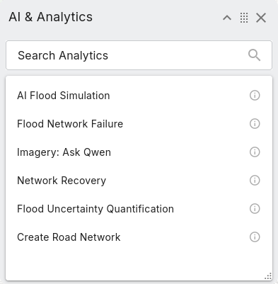
Clicking on a task type from the list will open the main panel view for that task type. This tutorial will explore the “Imagery: Ask Qwen” task, which allows you to ask Qwen 3.5, a large language model, a question about an aerial imagery raster layer.
The main task view has a title row which includes the name of the task type and an “X” button to close the task and return to the task list. If the task type has any additional information you need to know, an expandable “Details” section will also be visible. For this task, the details section explains about the model being used.
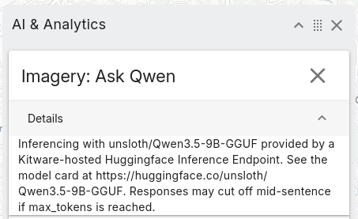
Below the title row is a tabbed interface with a “Run New” and a “View Existing” tab. The “Run New” tab displays a form where you can specify inputs. Submitting the form will spawn a task. The “View Existing” tab displays a list of previous runs. Each run in the list can be expanded to show its inputs, status, and outputs.
Note
If you do not have write access on the current project, you will not have access to run new tasks, so you will not see the tabs. You will only see the content of the “View Existing” tab.
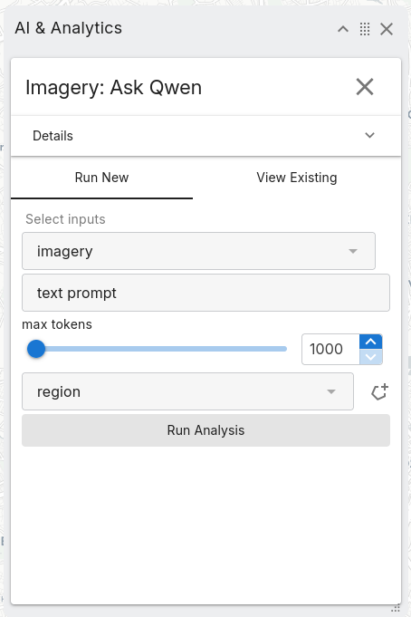
Run New Tab
The “Run New” tab displays a form to specify various inputs required for running that particular task. The controls visible will depend on which task type you are going to run. There are three basic types of controls.
-
Selection control with a search function to filter the list of available options
-
Numeric slider with a set minimum, maximum, and step
-
Free text input
There is also a specialized type of selection control if the input requires a region. This specialized control will show regions on the map as you hover over options in the list and will keep a region visible on the map once it has been selected.
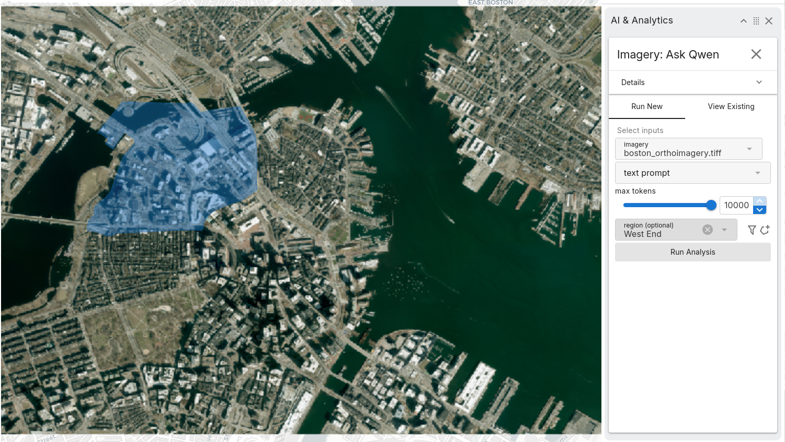
The region input control has two additional buttons on the right. The filter icon can be clicked to toggle option filtering on and off. When option filtering is enabled, the options shown in the dropdown will be limited to regions that intersect the map’s current viewport.
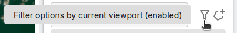
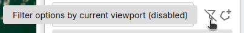
The plus-polygon icon to the right of the input, when clicked, will initiate draw mode. When draw mode is enabled an “X” icon will be shown in the same place to cancel the draw.
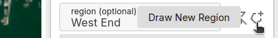
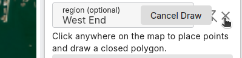
When draw mode is enabled, you can click anywhere on the map to place points for a closed polygon. Close the polygon by clicking on your initial point or pressing the “Enter” key. You may also press the “Esc” key to start your drawing over if you make a mistake.
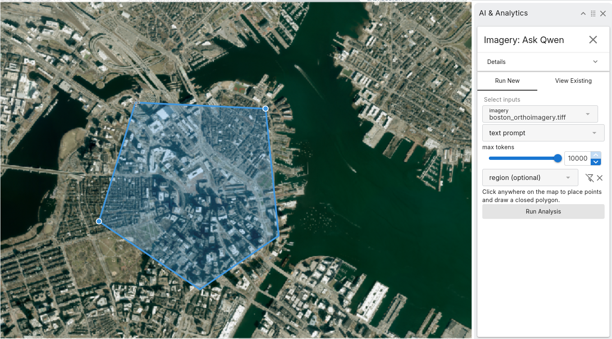
Once the polygon is closed, a text input will appear below the region selection control. You must supply a name for the new region in the text box before you can use it as an input for your task run. After you enter a unique and informative name, press “Enter” or click the blue arrow button to the right of the text input, and your region will be saved. Your newly created region will also be automatically selected in the region selection control.
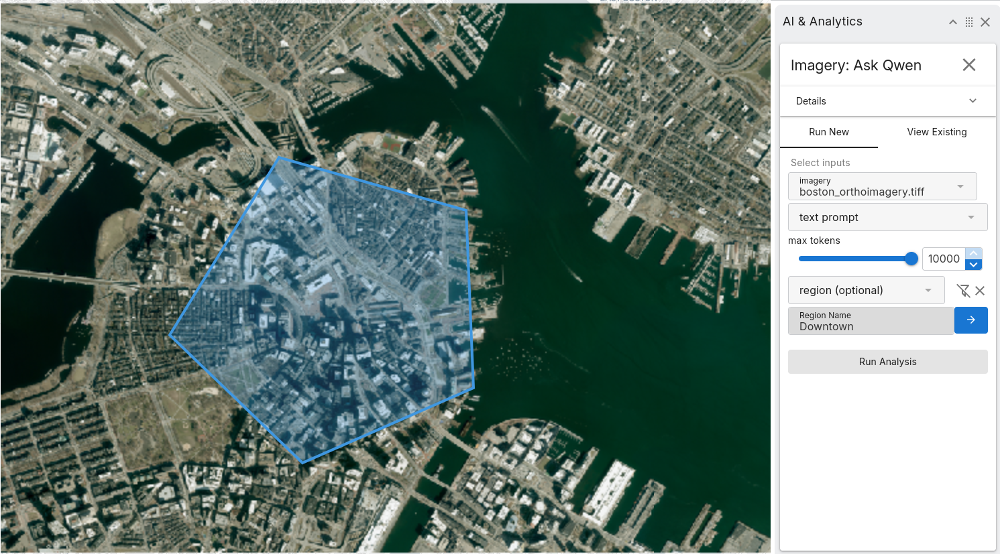
Once you have specified a value for all required inputs, you may click the “Run Analysis” button to spawn the task. Once the task is spawned, the panel will automatically switch to the “View Existing” tab so you can monitor the progress of your task run.
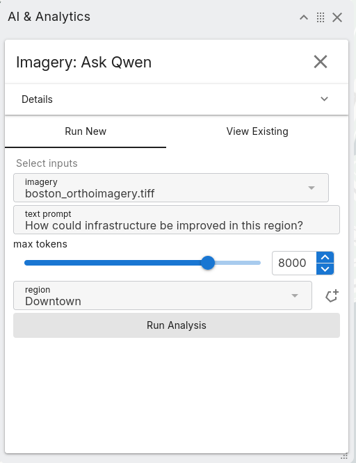
View Existing Tab
The “View Existing” tab displays a list of all previous runs of the current task type. Each run has a timestamp and a title determined by the inputs. Each run can be expanded to show its inputs, status, and outputs.
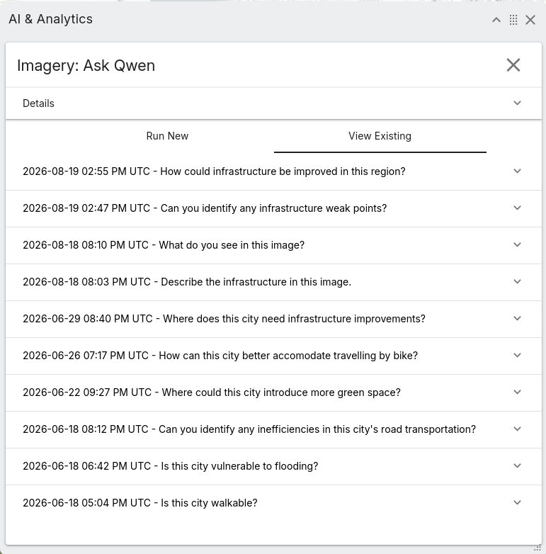
For example, this completed run of the “Imagery: Ask Qwen” shows a table with the four inputs provided for the run. Inputs that can be shown on the map have “Show” buttons next to them. Once clicked, that data will be shown on the map and the button will be replaced with a “Hide” button.
Below the inputs table, the status of the task shows it took about 4.5 minutes to complete. Lastly, below the status, the task outputs are shown. For the “Imagery: Ask Qwen” task, the only output is a markdown text response. We’ll see other output types in the following section as we explore other task types in an example use case.
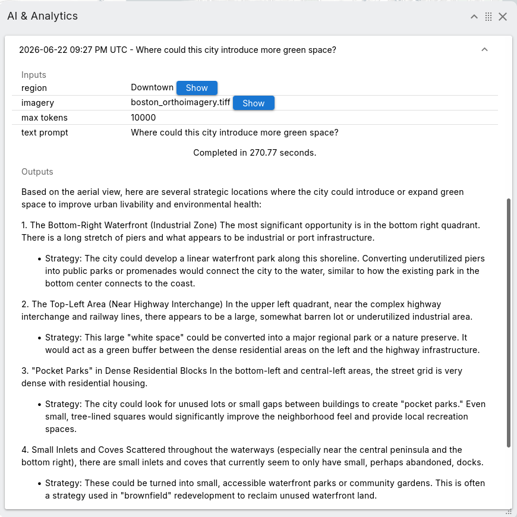
When a task is still running, no outputs will be shown yet. A loading bar will appear and the status will state the current step of the task. The status will update automatically as the task progresses.
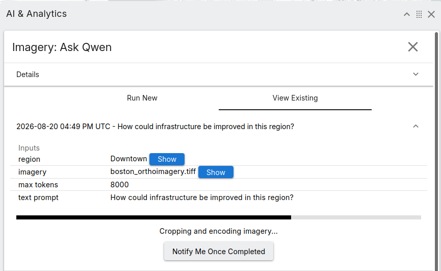
For shorter tasks, you may just want to watch the status while you wait for the task to complete. But for longer running tasks, you may wish to work on other things while your task is running. Below the status, there is a “Notify Me Once Completed” button. Once you click this button, you will be subscribed to the task and an email will be sent to you once the task is completed.
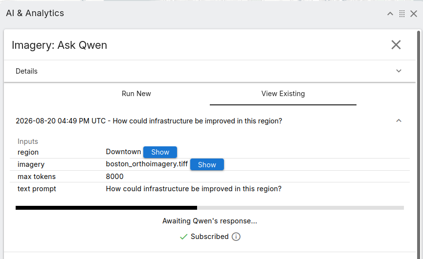
Once the task is completed, the task display will automatically update to show the outputs.
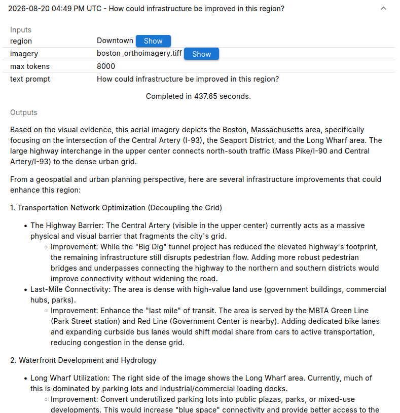
Task Chain Example Use Case
To explore the remaining five remaining analytics tasks, this section will follow an example use case examining the impact of a simulated flood on a transportation network. The tasks in this use case are chained together, where the output of one task is used as the input to the next task.
Task 1: Create Road Network
We begin with the “Create Road Network” task, which takes only one input. We only need to specify the name of the target location. This task will leverage osmnx to generate a dataset of the roads in the target location. The road system will be represented with a network of nodes and edges.
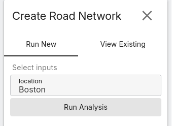
Once the task completes, the roads dataset is listed in the task’s outputs. Clicking the “Show” button will add the layer to the map.
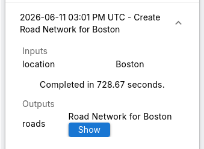
After adjusting the layer’s style a bit, the resulting road network looks like this.
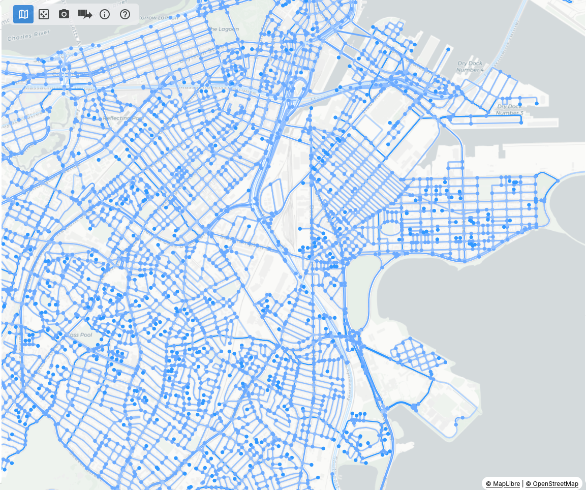
Zoomed out, the full result network looks like this:
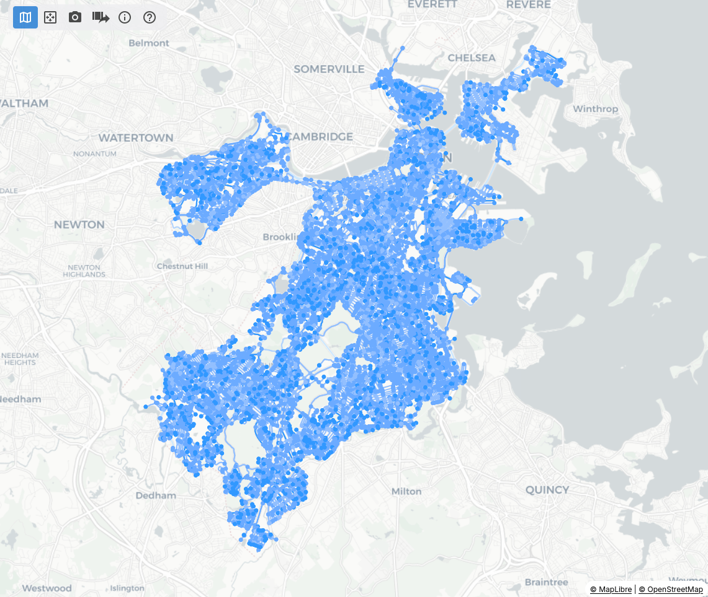
Task 2: AI Flood Simulation
For the second task, we’ll simulate an extreme flood event in the future. We developed the “AI Flood Simulation” task in collaboration with the Sustainability and Data Sciences Laboratory at Northeastern University. The simulation module is open source and available on GitHub.
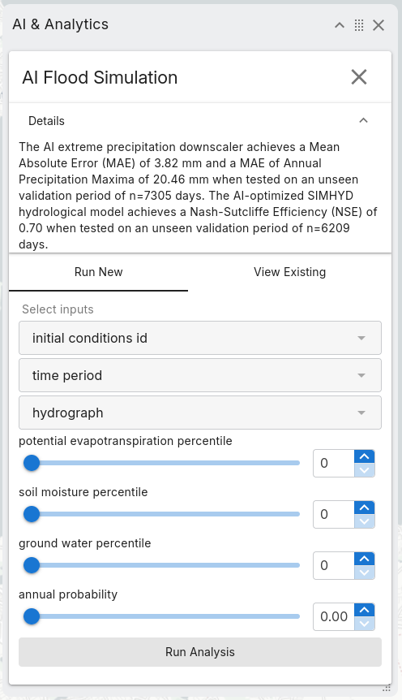
This task requires several inputs:
-
An initial condition set. Initial conditions "001", "002", and "003" start real-world emissions from year 1850 with the climate state from the 1001st, 1021st, and 1041st year of a pre-industrial control simulation. Since Earth's climate undergoes multi-year and multi-decadal cycles, the different initializations reveal the range of possible climates in real-world years 2031 and beyond.
-
A target time period. Available options are “2031-2050” and “2041-2060”.
-
A hydrograph chart. This simple bell curve represents the proportional discharge over time of a river during an extreme flood event. There are two available hydrograph charts, which can be viewed in the Charts Panel. The first represents the Charles River measured from Waltham, and the second represents a longer stretch of the Charles River, including more upriver tributaries.
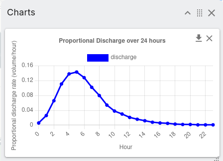
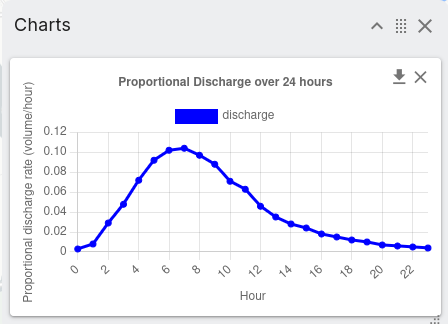
-
Potential evapotranspiration percentile. Percentile value between 0 and 100 representing the maximum amount of water that can evaporate in accordance with certain atmospheric conditions.
-
Soil moisture percentile. Percentile value between 0 and 100 representing soil moisture in the unsaturated soil levels above the water table.
-
Ground water percentile. Percentile value between 0 and 100 representing the amount of water in the saturated rock and soil layers below the water table.
-
Annual probability. Probability of the flood expressed as a decimal between 0 and 1. The probability expresses the severity of the flood. An annual probability of 0.01 represents a 1-in-100 year flood, and an annual probability of 0.25 represents a 1-in-4 year flood.
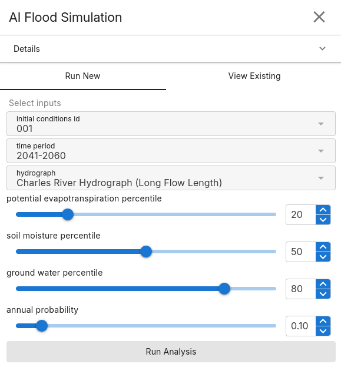
After selecting a set of inputs and spawning the task, the AI flood simulation module built by Northeastern University will run.
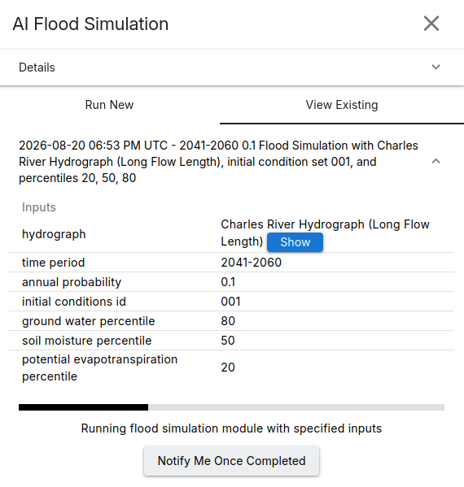
This run was completed in 29 seconds. The resulting flood dataset is shown in the outputs table, along with the computed values for the total precipitation in millimeters and the discharge rate in cubic feet per second.

Clicking the “Show” button next to the flood dataset will add the flood to the map. The flood layer is a multiframe layer, so the frame slider allows us to scrub through the frames of the flood. Each frame is an hour over a 24-hour period.
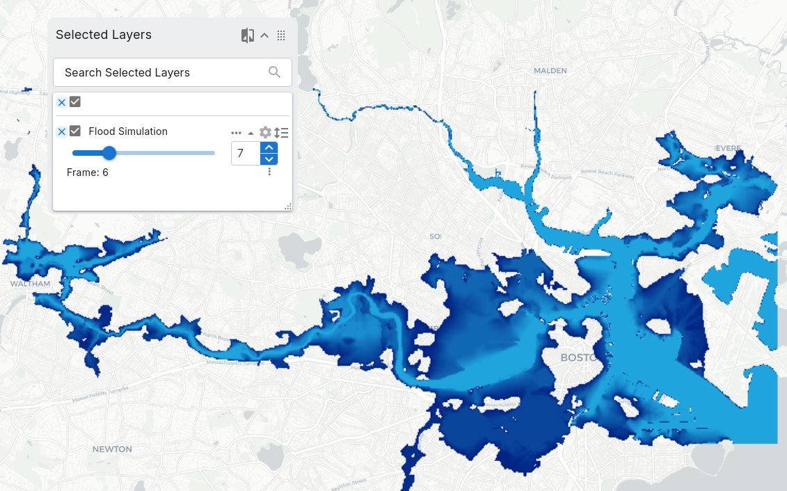
This screenshot shows the seventh hour of the flood, which is the peak, in accordance with the hydrograph we selected.
Task 3: Flood Network Failure
The next task will use the outputs of the previous two tasks as inputs. The flood network failure task examines how a selected network will be affected by a simulated flood. We’ll select the road network we generated and the flood we just simulated.
This task takes a few additional inputs to calibrate when a node goes out of service due to flooding. The depth tolerance expresses how much water (in meters) a node can tolerate. The station radius expresses how much area is covered by a node; the area around the node point with this radius (in meters) is considered part of the node. A node will be considered out of service if flood levels exceed the depth tolerance in any area covered by the node.
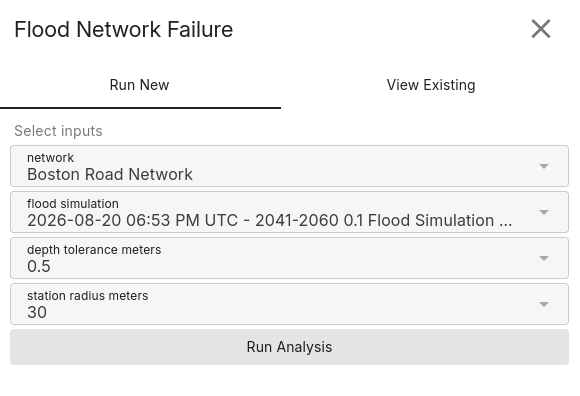
One thing to note about this task is the time complexity of this calculation. This task won’t take long for a sparse network like the MBTA Rapid Transit system, but for a dense network like the road system, this task can take some time.
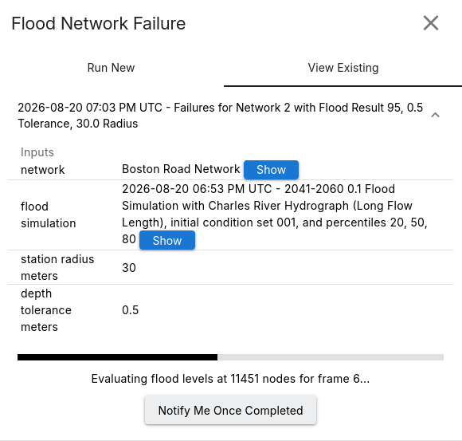
When this task run completes, the output section includes an item labeled “animation” with a “Show” button. Clicking the “Show” button will open the Networks Panel and load the animation steps. Once the animation is loaded, the Networks Panel will display a slider to scrub through the animation, as well as play/pause/rewind buttons to step through the animation at a regular interval. See the Networks Panel documentation to learn more about the controls for network animations.
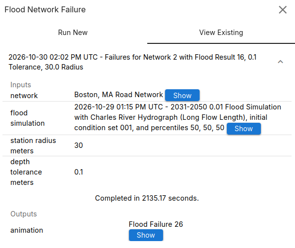
As the animation proceeds, both the flood layer and the network layer will update. For each hour in the 24-hour flood period, the animation will show the corresponding frame of the flood layer and update the network style according to the node states during that hour.
The following video shows the full flood animation resulting from this task run:

Task 4: Network Recovery
The next task in the chain is the network recovery task, which accepts the output of the previous task as input. This task will evaluate all the nodes that went out of service during the failure simulation and evaluate the best order to prioritize node recoveries according to a given metric. The available metric options pertain to different network topology principles.
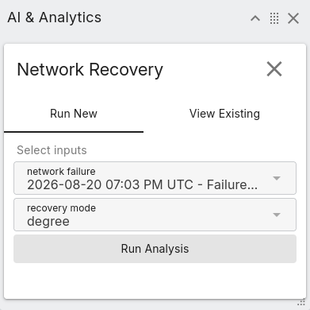
For this run, we select the task result we just ran and the “degree” metric, which evaluates each node by the number of edges connected to it.
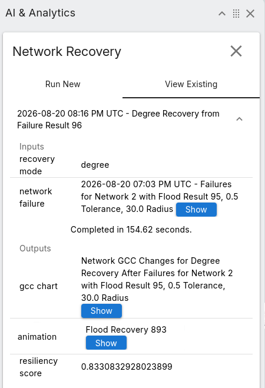
The first output is a “gcc chart”, and clicking the “Show” button next to that output will open the Charts Panel and display a chart. This chart depicts how the number of deactivated nodes and the size of the network’s greatest connected component (GCC) change over time as the flood and recovery events proceed.
In the chart below, timesteps 0-23 represent the flood event; the number of deactivated nodes increases (red line) and the size of the greatest connected component decreases (blue line), and then they stay static as the flood recedes. Then the recovery phase begins, and with one node recovered each timestep, in the order determined by the selected metric, the number of deactivated nodes decreases and the size of the greatest connected component increases.
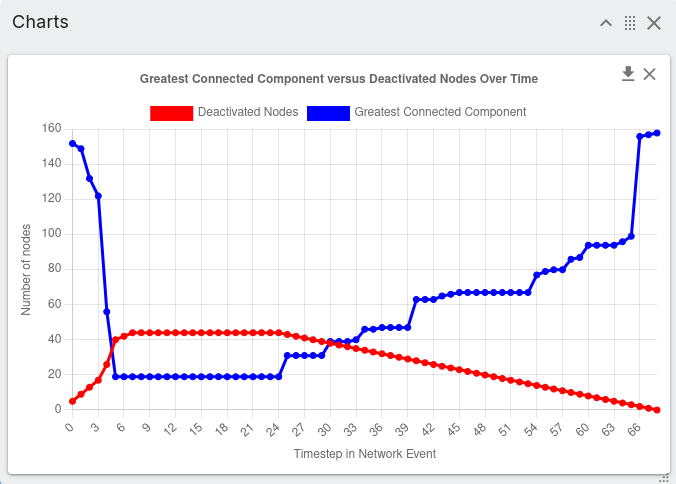
The second output of this task is an animation similar to the one shown as the output of the previous task. This animation will show nodes coming back online one at a time, ordered by the selected metric.
The third output of this task is a resiliency score between 0 and 1. The resiliency score represents the area under the GCC curve with outages over the area under the curve without outages. This metric is related to the overall resilience of the network against outages. A more highly connected network will maintain a large GCC even with many outages, and will therefore have a higher resiliency score. The resiliency score value we received for this run with the roads network was 0.83. We can compare that to a previous run on the MBTA Rapid Transit network, which has much less redundancy; that run received a resilience score of 0.37.
Task 5: Flood Uncertainty Quantification
The final task we’ll explore in this use case offers a way to validate the flood simulation step. This task was developed by our collaborators at Northeastern University.
You can select three previous runs of the flood simulation task, and this task will calculate a handful of error statistics from their outputs for maximum precipitation and discharge rate.
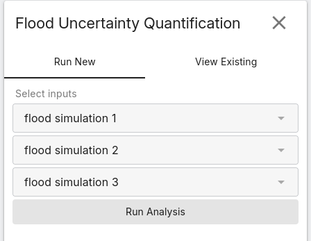
Since this task is just a relatively simple computation, it completes in less than a second. It has several numeric outputs that can be used to quantify uncertainty among the three floods.
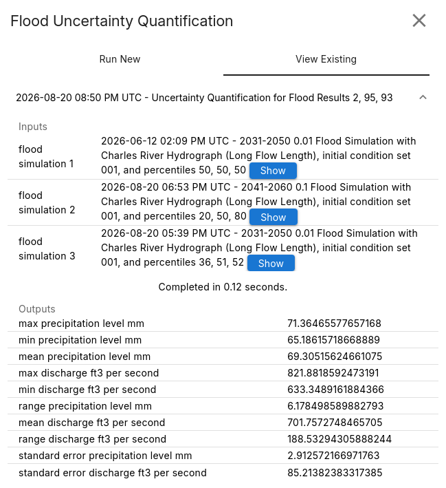
Conclusion
The six task types explored in this documentation demonstrate the range and potential of the analytics features. Some tasks are more complex simulations, some leverage AI models, and some are straightforward computation. The analytics features are adaptable to various task types, and adding new tasks can be achieved with the addition of a python class. If you are interested in implementing your own task, refer to the Advanced Documentation for Custom Analytics. Otherwise, Contact Kitware and tell us about your use case so we can write new task types to support you.